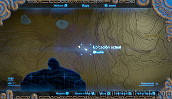
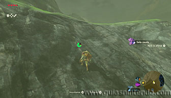
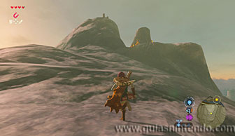
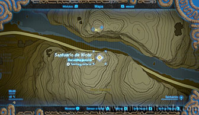
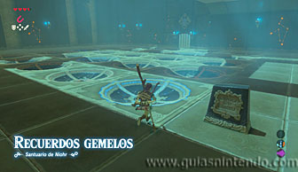
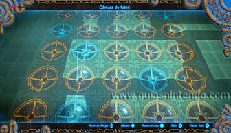
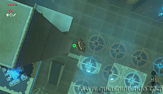
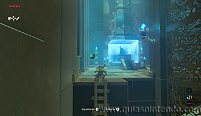

Puedes acceder a este santuario desde que llegas a la región de la torre de Picos Gemelos. Sin embargo, es aconsejable que hayas pasado por el Santuario de Hiddar para tener el Pañuelo de escalada. El objetivo es escalar el Pico Gemelo sur por la parte trasera (el único punto por donde puedes ir escalándolo).

En el punto más alto del pico se encuentra el santuario de Niorh.

Este santuario está conectado con el Santuario de Shibben (que se encuentra un poco más abajo, en el Pico Gemelo del norte, justo enfrente a este). Debes colocar correctamente las esferas en sus respectivos huecos para abrir la puerta de salida. Sin embargo, el orden correcto solo puedes conocerlo si has pasado por el santuario gemelo. Del mismo modo, tendrás que ver como están colocadas aquí las esferas para saber como colocar las del otro santuario. El orden correcto es como se ve en la foto siguiente. Cada hueco que tiene una esfera se vuelve de color azul (la tercera columna no tiene ninguna esfera).

Antes de irte podrás abrir un cofre si usas la paravela desde el ascensor y planeas detrás de la columna. Contiene un mandoble del vigilante.

Ahora podrás pasar por la puerta que abriste y dirigirte al altar del santuario para obtener un símbolo de valía.
